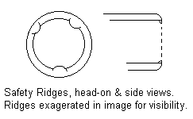
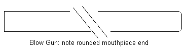
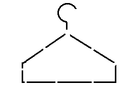
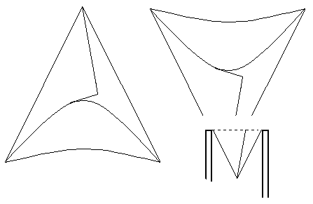
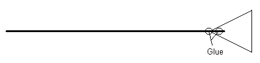
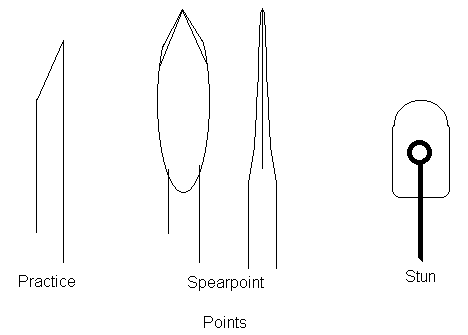

You asked for it, you got it...
|
DF! has been getting a lot of requests for more info on blow guns since the previous article by Locked N. Loaded. But they haven't been able to get in touch with him again, so Carl asked me to take a shot at it. I guess he thought that improvisation and homemade stuff was up my alley. It looked like fun, so I went for it.
Bear in mind that I am a novice; I haven't necessarily found the best ways of doing things. What I came up with will work, but you may want to tweak the procedures a bit yourself. The Blow Gun Materials:
I picked four feet as a compromise length: short enough to handle, long enough to aim. And hopefully long enough to get the best advantage of air pressure without losing too much to friction in a long pipe. After you've cut your length, make sure you remove any burrs on the ends, both inside and outside of the pipe. You don't want your darts or lips to get snagged. For comfort, round off the outside edge of the mouthpiece end of your pipe. Don't round the muzzle end, though; you'll want to be able to distinguish the different ends by feel. This is for safety, believe it or not. Take a hot knife and press on the inside edge of the mouthpiece, melting a very small ridge into the edge. Do this at three points around the circle.
 These ridges are meant to prevent you from accidentally inhaling a dart. The ridge is low enough for a dart to be slid into the breech, but the trailing edge of the dart's cone (we'll get to that) will catch so that it can't slide back. You should do your inhaling before the gun reaches your mouth, but this so easy to fix, you might as well. So much for the blow gun.

The Darts A blow gun is pretty useless without something to shoot out of it. Let's make some darts.
Sheet of paper Glue Snip off the twisty neck and hook of the coathanger and throw them away; they're too bent to bother with. Straighten the remaining wire completely. Cut the wire into six inch lengths. These will be the body of your darts. Do any more necessary straightening; they won't work worth a darn if they're bent.
 Again, six inches is a compromise. I found that much longer or shorter just didn't fly as well. Now you need to make little paper cones. These will go on the tail end of the darts. The cone acts as an air seal inside the blow gun, and as a fin in flight, so the dart flies straight instead of tumbling uselessly. The cone must fit the blow gun tube exactly. You can size it by placing the apex of the cone in the blow gun, and tracing a circle around the paper where it contacts the edge of the pipe. Cut the excess paper off.  Push the dart body through the point of the paper cone. Slide the cone to the rear of the dart, and glue it in place. Keep it aligned as well as possible while the glue dries.
 Points Once the glue has dried on your darts, you're nearly done. All that remains is putting points on the darts. For target practice, all you want is a simple point. Snipping the end of the wire at an angle with diagonal cutters ("dikes") will suffice. But you can always touch that up with a sharpening stone. Hunting points are a little more elaborate, but still simple to make. "Spearpoints" are pointed-oval points that make a larger wound channel than target points. Hammer the end of your dart flat on an anvil. (My anvil these days is a piece of railroad track; makes a great doorstop, too). As you hammer, watch out for the metal to curve off in one direction. Hammer evenly across the metal to avoid this. File the head to a point and sharpen. When you're done with all that, view the head edgewise to make sure it's straight. In flight, that head will act like a little fin; if it's bent, your dart will fly off course. Watch out for this in the field, too. I've seen "stun darts" in catalogs, too. These are apparently meant for critters like small birds. To make one of these, bend the end of your dart into a tiny loop. Then form a lump of epoxy putty (like QuickSteel) around it. Watch the shape, so the finished product will fly straight. The front of the head should be rounded for some aerodynamics, but not pointed. The reason for loop is so your wire dart won't punch right through the putty head when it hits the target.
 Practice Targets It's possible to penetrate 1/2 inch plywood with a dart, but that's hard on your gear; you'd be sharpening your points a lot. Multiple layers of heavy, corrugated cardboard (like a refrigerator box) work much better; it's easier on your points. Use multiple layers so your darts don't "bottom out" on impact. That can damage your cones, or rip them off altogether. Closed-cell foam works nicely, too. But stay away from Styrofoam; it tends to break down into messy, annoying little bits that get everywhere. Poisons and Tranquilizers I was warned that there'd be questions about this, so... I'm no chemist or doctor. I can't tell you what to use. But I do think you should be leery of using poison on game that you plan to eat. If you introduce enough toxin to drop the animal quickly, you may be contaminating the meat; you could inadvertently poison yourself come dinnertime. There is also the risk of accidentally transferring poison from your dart to the mouthpiece of your blow gun. Personally, I think you should avoid poisons unless you know exactly what you're doing. Wrapping Up As you saw, blow guns and darts are dead simple to make, and can be assembled from stuff you may have laying around the shop anyway. They're great for dealing with tree-rats without terrifying ignorant neighbors with gun shots, too. You can customize your gear. You might want to paint your gun in a camouflage pattern appropriate to your terrain. I've seen blow guns with rubber cushion grips; you can duplicate that with the bicycle handlebar grips you'll find in any bike shop. I've even seen sights, but I have doubts about that. You can dress up your darts in much the same way that archers do their arrows, with colored and patterned cones. It can make them easier to find after shooting, and can serve as an identifying tool if you hunt with other blow gun users. You can make other types of points, too. Putties like QuickSteel open up a range of possibilities for variously sized and shaped heads Here it comes... Be creative! One bit of advice on winter use: PVC can get brittle when cold. Be careful not to smack your blow gun against anything out in the snow. Have fun!
Did you like this article?
|